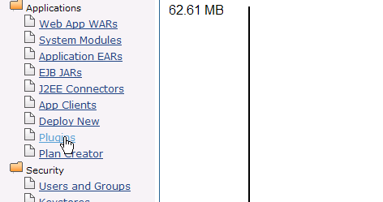
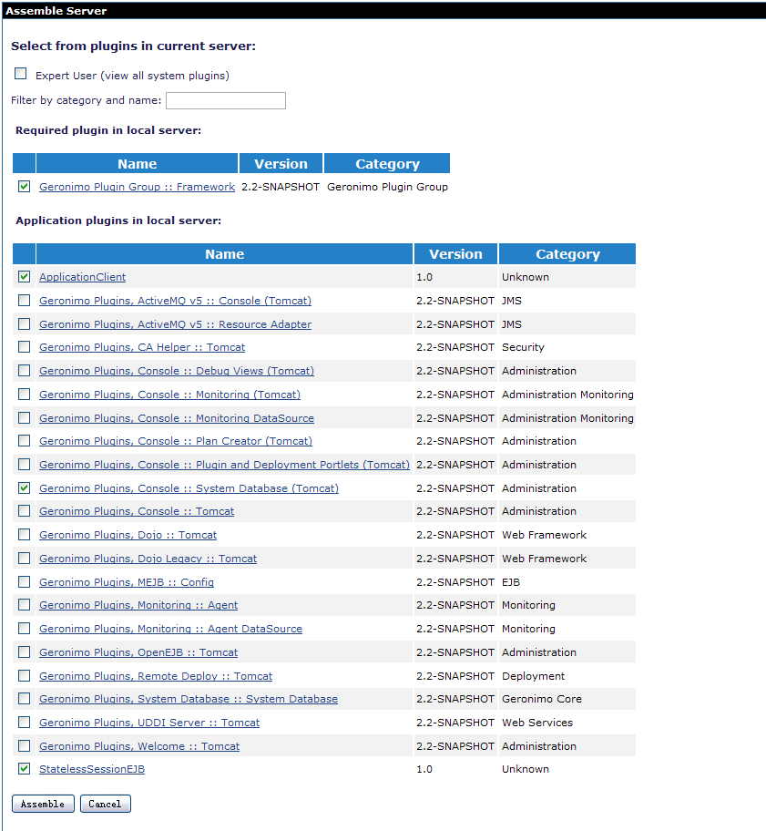
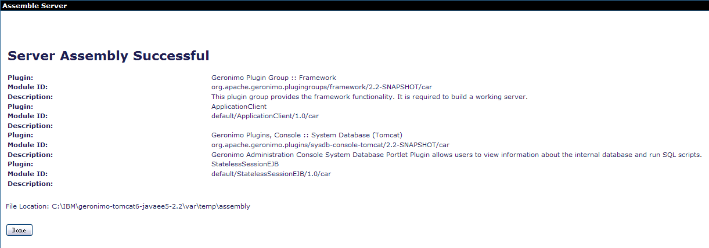

本教程说明了如何使用控制台中以应用程序为中心的方法来组装定制服务器。通过使用这种方法，我们的应用程序将定义服务器的内容。定制服务器将围绕我们的应用程序构建，并且将仅包含应用程序所需的组件。您可以使用“教程”部分中的现有教程来开发示例应用程序。有关应用程序开发和部署的信息，请参见Stateless Session Bean教程。本主题将组装一个仅包含应用程序所需功能组件的自定义服务器。
识别我们服务器所需的功能组件
要使用以应用程序为中心的方法，您需要找出应用程序所需的各种依赖关系。这是组装定制服务器所需的主要工作，而Geronimo管理控制台已简化了该工作。
- 要从现有Geronimo实例组装服务器，您需要包括Geronimo Plugin Group :: Framework插件组，这是功能服务器的框架，默认情况下已预先选择。有关Geronimo插件组:: Framework的更多信息，请参见插件组部分。
- 要确定要包括的应用程序插件，请找出应用程序所需的各种依赖关系。例如，对于从Stateless Session Bean教程开发的示例应用程序，请包括以下插件：
- Web存档插件默认值/ApplicationClient/1.0/car
- StatelessSessionEJB插件默认值/StatelessSessionEJB/1.0/car
- 数据源池插件控制台/dbpool/jdbc_userds/1.0/car
有关如何获取这些插件的信息，请参阅使用管理控制台将应用程序转换为插件 。
- 要从管理控制台创建新数据库，您需要包括插件组Geronimo插件，Console :: System Database（Tomcat） ，其中包括控制台界面插件，嵌入式Derby数据库插件和必需的资源适配器插件。
这样就完成了以应用程序为中心的定制服务器所需的所有功能组件（依赖项）的标识。
组装定制服务器
- 启动管理控制台，然后在“ 应用程序”下选择“ 插件 ”。

- 选择“以应用程序为中心”作为“ 自定义组装模式” ，然后单击“ 组装服务器” 。

- 按照建议的名称命名工件：groupId为test，artifactId为TestServer，格式为zip左右。

- 下一步是选择您确定的功能组件。选择Geronimo插件组:: Framework ，WAR，EJB和数据库池插件。您还必须选择Geronimo Plugins，Console :: System Database（Tomcat），因为我们的应用程序使用derby数据库，并且您必须从控制台创建数据库。由于应用程序WAR，EJB和数据库池插件是相互依赖的，因此您可以自由选择其中之一，因此其余的依赖关系将自动组装。
您也可以选择专家模式来选择单个插件，而不是插件组。 - 您选择的插件/插件组的最终列表应如下：
- org.apache.geronimo.plugingroups / framework / 2.2-SNAPSHOT / car
- org.apache.geronimo.plugins / sysdb-console-tomcat / 2.2-SNAPSHOT / car
- 默认/StatelessSessionEJB/1.0/car
- 完成后，点击组装 。

- 在下一个屏幕上，将显示每个工件及其相关属性。点击安装 。

- 完成此操作后，您将收到一条确认消息，提示服务器组件成功或失败。它还将列出自定义服务器程序集的位置，默认情况下为/ var / temp / assembly。
 - 该服务器将被命名为
TestServer-1.0-bin.zip 。在里面/var/temp目录中，您将找到新组装的服务器的软件包，该软件包具有最小的占用空间和所需的最少组件。解压缩并启动服务器。 - 由于我们的无状态会话Bean使用userdbs ，因此您需要按照本教程中的建议创建数据库和表。
这样就完成了有关自定义服务器组装的说明。